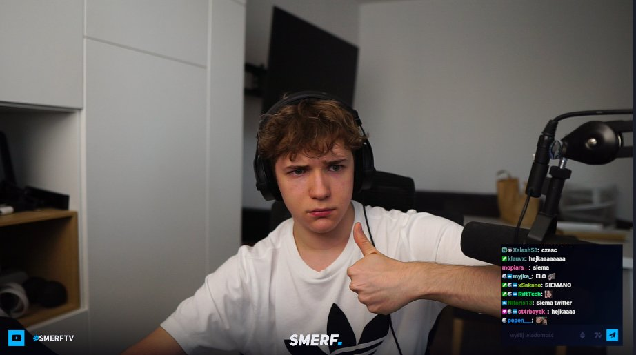

(Artykuł powstał w porozumieniu z podmiotem, którego dotyczy.)
Michał Stradczuk jest znanym streamerem, geniuszem i studentem MIMuw. W związku z tym, że
nasza redakcja dostaje ostatnio bardzo dużo zapytań na jego temat, zdecydowaliśmy się na utworzenie dedykowanej strony odpowiadającej na wszystkie Wasze pytania.
Wybrane wymiary Michała Stradczuka
Ilość w cm
Wysokość
180
Szerokość
45
Obwód bicepsa
55
Wysokość nosa
3.5
Inne, nieopisane pomiary
6.5
Zdjęcie Smerfka

Tak, nie mylicie się: tak właśnie wygląda Michał Stradczuk (SmerfTV).
Czy wiesz, że...
Rozwiń, aby zobaczyć ciekawostę
Kiedy Michał Stradczuk był mały, to zjadł cały granulat dla stradczuków ;(